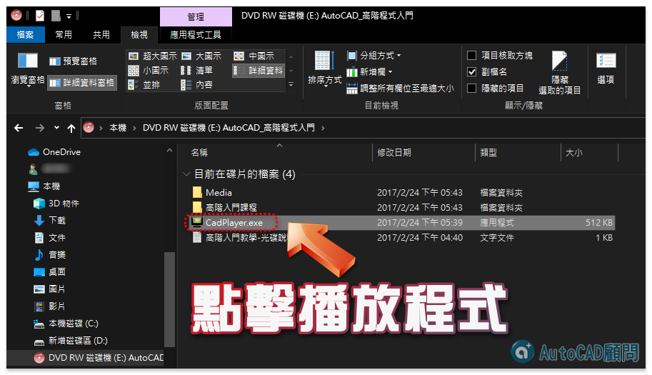
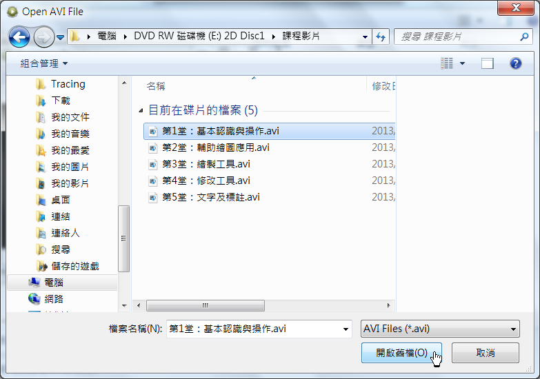

您好:
方式1：函授光碟播放步驟，放入電腦光碟機，滑鼠右鍵執行播放
方式2：開啟檔案總管，點擊播放程式

如果仍然不行可以使用替代方式：
步驟1：開啟 CamPlay.exe [Avi影片播放程式]
下載： https://goo.gl/WXaZyV
備用： https://app.box.com/s/27vdoa0u7lqfd8wzy8dx
步驟2：File功能表 >> Open
步驟3：找尋光碟中的AVI影片檔撥放即可
